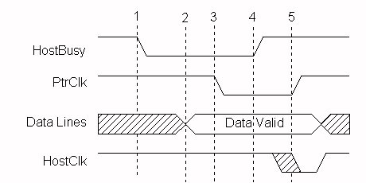

With later implementations of the parallel port interface, some manufacturers, led by IBM on the PS/2 parallel port, added the capability to disable the drivers used for driving the data lines, and allowed the data port to become an input read data port. This enables a peripheral to send an entire byte of data to the PC in one data transfer cycle by using the 8 data lines, rather than the two cycles required using the Nibble mode.
This ability enables a Byte mode for reverse channel data transfer that can be used to provide data rates into the PC approaching that of the Compatibility mode, from the PC. This type of port is sometimes referred to as a "enhanced bi-directional" port, and has caused some confusion when mistaken for an Enhanced Parallel Port (EPP).
The following table identifies the Byte mode signal names, and figure 3 shows the handshake for a Byte mode data transfer.
| SPP Signal | Byte Mode Name | In/Out |
Description |
|---|---|---|---|
| nSTROBE | HostClk | Out | Pulsed low at the end of each Byte mode data transfer to indicate that the byte was received. Acknowledge signal. |
| nAUTOFEED | HostBusy | Out | Set low to indicate host is ready for byte. Set high to indicate byte has been received. Handshake signal. |
| nSELECTIN | 1284Active | Out | Set high when host is in a 1284 transfer mode. |
| nINIT | nINIT | Out | Not used. Set high. |
| nACK | PtrClk | In | Set low to indicate valid data on the data lines, set high in response to HostBusy going high. |
| BUSY | PtrBusy | In | Forward channel Busy status. |
| PE | AckDataReq | In | Follows nDataAvail |
| SELECT | Xflag | In | Extensibility flag. Not used in Byte mode. |
| nERROR | nDataAvail | In | Set low by peripheral to indicate that reverse data is available. |
| DATA[8:] | DATA[8:1] | Bi-Di | Used to provide data from peripheral to host. |

Figure 1 -- Byte Mode Data Transfer Cycle
Byte Mode signal transitions:
1. Host signals ability to take data by asserting HostBusy low
2. Peripheral responds by placing first byte on data lines
3. Peripheral signals valid byte by asserting PtrClk low
4. Host sets HostBusy high to indicate that it has received the and is not yet ready for another byte
5. Peripheral sets PtrClk high to acknowledge host. Host pulses HostClk as an acknowledgement to the peripheral
6. States 1 through 5 repeat for additional bytes